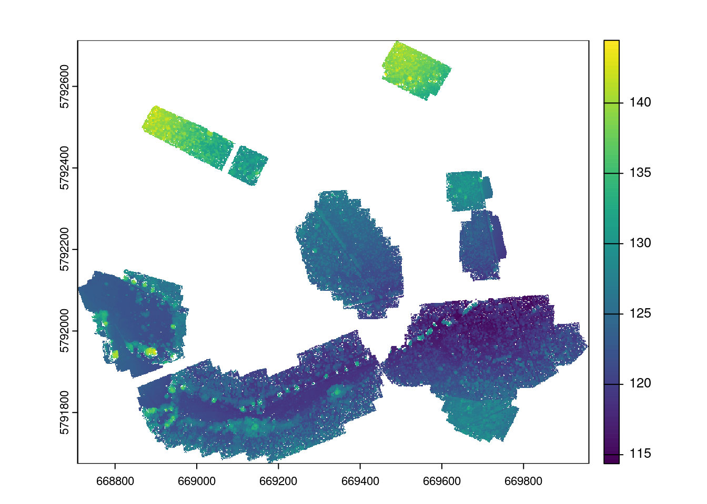
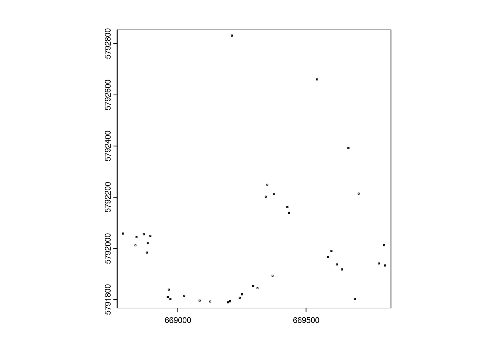

This script loads the point clouds from the photogrammetry of a drone pass over Strawberry Hill, Bedfordshire, a rewilding site managed by the Wildlife Trust.
# Setuplibrary(tidyterra)
Attaching package: 'tidyterra'
The following object is masked from 'package:stats':
filter
library(renv)
Attaching package: 'renv'
The following objects are masked from 'package:stats':
embed, update
The following objects are masked from 'package:utils':
history, upgrade
The following objects are masked from 'package:base':
autoload, load, remove, use
library(RCurl)library(devtools)
Loading required package: usethis
Attaching package: 'devtools'
The following object is masked from 'package:renv':
install
library(lidR)library(RCSF)library(raster) # These functions rely on the raster package which is being superceded by terra
Loading required package: sp
Attaching package: 'sp'
The following object is masked from 'package:lidR':
wkt
Attaching package: 'raster'
The following objects are masked from 'package:lidR':
projection, projection<-
The following object is masked from 'package:tidyterra':
select
# terra isn't compatable with all other packages used here though, so raster is still neededlibrary(ggplot2)library(foreach)library(rnaturalearth)library(rnaturalearthdata)
Attaching package: 'rnaturalearthdata'
The following object is masked from 'package:rnaturalearth':
countries110
library(doParallel) # for parallel computing
Loading required package: iterators
Loading required package: parallel
library(viridis)
Loading required package: viridisLite
library(mapview)library(rayshader)
Warning in rgl.init(initValue, onlyNULL): RGL: unable to open X11 display
Warning: 'rgl.init' failed, running with 'rgl.useNULL = TRUE'.
library(lidR)library(terra)
terra 1.7.78
Attaching package: 'terra'
The following objects are masked from 'package:lidR':
area, crs, crs<-, is.empty
The following objects are masked from 'package:renv':
init, project
library(here)
here() starts at /data/RELOD_quarto
library(future)
Attaching package: 'future'
The following object is masked from 'package:renv':
run
── Conflicts ────────────────────────────────────────── tidyverse_conflicts() ──
✖ purrr::accumulate() masks foreach::accumulate()
✖ tidyr::complete() masks RCurl::complete()
✖ tidyr::extract() masks terra::extract(), raster::extract()
✖ dplyr::filter() masks tidyterra::filter(), stats::filter()
✖ dplyr::lag() masks stats::lag()
✖ purrr::modify() masks renv::modify()
✖ dplyr::select() masks raster::select(), tidyterra::select()
✖ purrr::when() masks foreach::when()
ℹ Use the conflicted package (<http://conflicted.r-lib.org/>) to force all conflicts to become errors
library(sf)
Linking to GEOS 3.10.2, GDAL 3.4.1, PROJ 8.2.1; sf_use_s2() is TRUE
Attaching package: 'sf'
The following object is masked from 'package:lidR':
st_concave_hull
library(ggpubr)
Attaching package: 'ggpubr'
The following object is masked from 'package:terra':
rotate
The following object is masked from 'package:raster':
rotate
library(lwgeom)
Linking to liblwgeom 3.0.0beta1 r16016, GEOS 3.10.2, PROJ 8.2.1
Attaching package: 'lwgeom'
The following object is masked from 'package:sf':
st_perimeter
The point clouds were created in several separate files, based on an area of the drone pass on different days. As a result we have 8 laz files, some of which overlap a little. To improve processing time, rather than separately loading in each different laz file, we will first retile the laz files into smaller individual tiles, 250m across, that are saved in the data-output folder. In lidR, the functions are designed to deal with either individal las files or these las catalogues, so it will be much easier and quicker to process this way.
load in the original laz files produced from the structure from motioin drone photogrammetry once:
# I have explicitly written the pathway here rather than using here() as it misclassified# the file pathctg <-readLAScatalog("/data/notebooks/rstudio-analysis/data-output/sh/las_cat_250")las <-readLAS(ctg,filter ="-drop_z_below 0")
Warning: Invalid data: RGB colors are recorded on 8 bits instead of 16 bits.
# This plot will not properly load on datalabs because it produces a 3d popup box #plot(las)### do the chm for the whole area: chm <-rasterize_canopy(las, res =0.5, p2r())#writeRaster(chm, here("data-output","sh", "chm.tif"))plot(chm)

# this removes the gaps within the point cloud:kernel <-matrix(1,3,3)chm_p2r_05_smoothed <- terra::focal(chm, w = kernel, fun = median, na.rm =TRUE)plot(chm_p2r_05_smoothed)
# Identifying position of tree tops:# ws: numeric or function. Length or diameter of the moving window # used to detect the local maxima in the units of the input data # (usually meters). If it is numeric a fixed window size is used.# hmin: numeric. Minimum height of a tree. Threshold below which a # pixel or a point cannot be a local maxima. Default is 2.# as you increase the hmin from 0.2 to 1, it doesn't seem to make a difference# in the number of trees that are found. # if you increase the ws from 1 to 2, that does affect the number of trees identified# by quite a substantial amount.f <-function(x) {x *0.2+1}heights <-seq(0,5)ws <-f(heights)# writing your own function is much more time consuming than using a standard# circle size.ttops <-vect(locate_trees(las, lmf(f)))ttops <-as_sf(ttops)algo <-dalponte2016(chm, ttops)crowns <-algo()writeVector(vect(ttops), here("data-output", "ttops_07_12.shp"))writeRaster(crowns, here("data-outputs", "crowns_30_11.tif"))
Vegetation data collection at Strawberry hill: data preparation to prepare with structure from motion pointcloud:
# x and y are the SW corner# creating a box with a buffer around the 5m plot:df_shp <-as.data.frame(shp_p, geom ="XY")df_shp$ymax <- df_shp$y +5df_shp$xmax <- df_shp$x +5df_shp$ymin <- df_shp$y df_shp$xmin <- df_shp$xv_extents <-list()for(i in1:nrow(df_shp)){ v_ext <-ext(c(df_shp[i,"xmin"], df_shp[i,"xmax"], df_shp[i,"ymin"], df_shp[i,"ymax"])) v <-vect(v_ext) v$id <- df_shp$id[i] v_extents[[i]] <- v}shp_plots <-do.call(rbind, v_extents)crs(shp_plots) <-"EPSG:27700"# reprojecting to the coordinate reference system used in the point cloud:shp_plots <- terra::project(shp_plots, "EPSG:32630")# plot the plot positions and the extent of the point cloud here:plot(shp_plots)

#writeVector(shp_plots, here("data-output", "sh_plot_27_11.shp"))################################################################################### with a buffer:# plot positions:df_shp <-as.data.frame(shp_p, geom ="XY")df_shp$ymax <- df_shp$y +15df_shp$xmax <- df_shp$x +15df_shp$ymin <- df_shp$y -10df_shp$xmin <- df_shp$x -10v_extents <-list()for(i in1:nrow(df_shp)){ v_ext <-ext(c(df_shp[i,"xmin"], df_shp[i,"xmax"], df_shp[i,"ymin"], df_shp[i,"ymax"])) v <-vect(v_ext) v$id <- df_shp$id[i] v_extents[[i]] <- v}shp_plotsb <-do.call(rbind, v_extents)crs(shp_plotsb) <-"EPSG:27700"# reprojecting to the coordinate reference system used in the point cloud:shp_plotsb <- terra::project(shp_plotsb, "EPSG:32630")# plot the plots and the extent of the point cloud here:plot(shp_plotsb)
# x and y are the SW corner# creating a box with a buffer around the 5m plot:df_shp <-as.data.frame(shp_p, geom ="XY")df_shp <-left_join(df_shp, df_trees, by ="id")df_shp$position_E <-as.numeric(df_shp$position_E)
#writeVector(v_trees, here("data-output", "v_trees.shp"))# add a buffer to the tree point depending on the size of the crown:tsp <-list()for(i in1:nrow(v_trees)){ t <- v_trees[i,] bt <-buffer(t, df_shp$m_cw[i]/2) tsp[[i]] <- bt}v_tsp <-vect(tsp)#writeVector(v_tsp, here("data-output", "tree_buffer.shp"))
Combining the datasets together for comparison:
# want to crop the crowns and tree tops to the area of each plot:ttops <-vect(here("data-output", "ttops_07_12.shp"))shp_plotsb <-vect(here("data-output", "plot_buffer.shp"))ttopsb <- terra::crop(ttops, shp_plotsb)#writeVector(ttopsb, here("data-output", "ttopsb.shp"))# hasn't been done yet:#crownsb <- terra::mask(crowns, shp_plotsb)#writeRaster(crownsb, here("data-output", "crownsb_30_11.tif"))shp_plots <-vect(here("data-output", "sh_plot_27_11.shp"))ttopsplot <- terra::crop(ttops, shp_plots)#crownsplot <- terra::mask(crowns, shp_plots)t <- terra::extract(shp_plots, ttopsplot)t <- terra::relate(shp_plots, ttopsplot, "contains")t[t ==TRUE] <-1t[t ==FALSE] =0n_trees <-as.numeric(rowSums(t))df <-as.data.frame(cbind(n_trees = n_trees, id = shp_plots$id))head(df_trees)